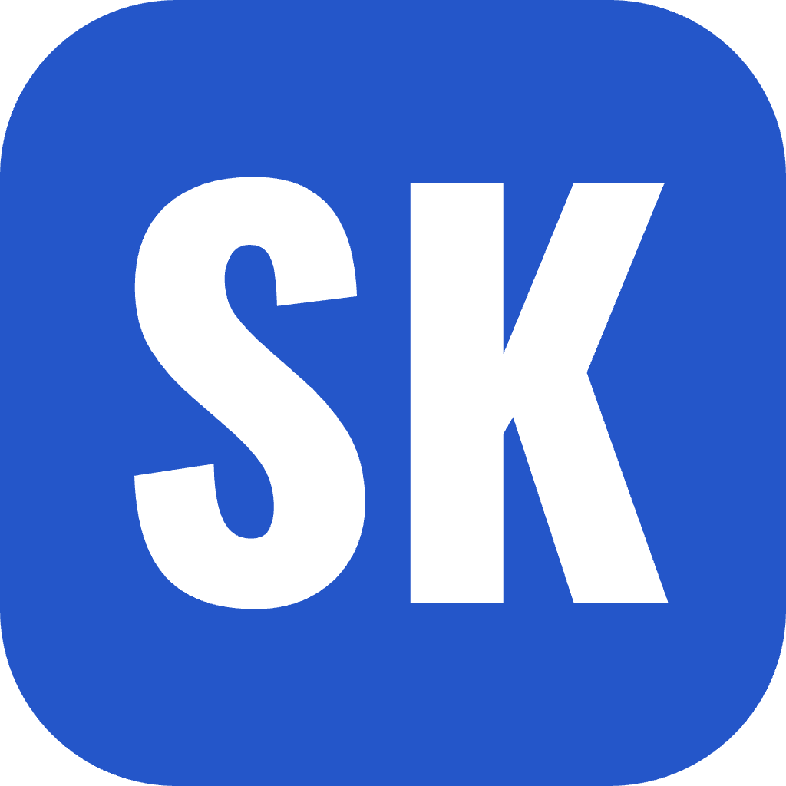
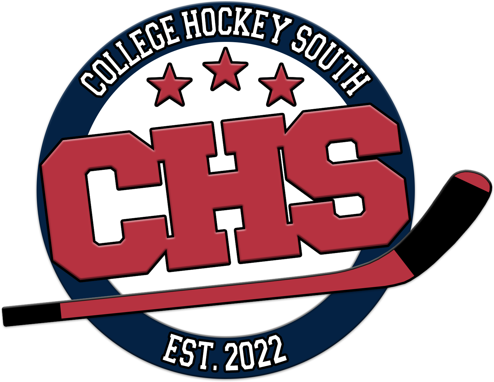

SyncSports · Used by College Hockey South
One league, connected software.
I created SyncSports and built the tools College Hockey South uses to run games and keep fans informed. ScoreKeep captures game events, and the league site publishes schedules, scores, standings, and statistics. The CHS mobile app brings that information to fans, while Broadcast adds live scores to team streams.

×
01 / GAME OPERATIONS
ScoreKeep
Digital scoring, game events, rosters, and league administration.
02 / LEAGUE PUBLISHING
CHS league site
Schedules, standings, player statistics, news, and game information.
03 / FAN EXPERIENCE
CHS mobile app
Scores, schedules, standings, stats, and league updates on iOS and Android.